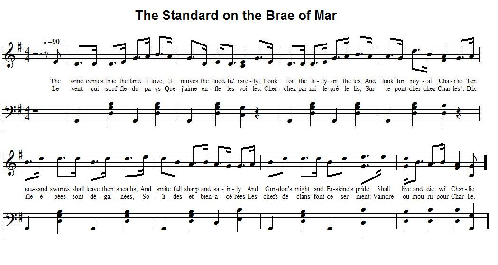

The Wind comes frae the land I love
Le vent qui souffle du pays
(Royal Charlie)
From Robert Malcolm's "Jacobite Minstrelsy", page 320, 1828Tune - Mélodie (midi)
Tune - Mélodie (mp3)
"The Standard of Braemar"
Sequenced by Christian Souchon
|
To the tune:
In spite of the different structure (partly four line instead of eight line verses ending with the burden "Charlie"), there is no doubt that the composer of the present song set it, in whole or in part, to the tune "the Standard on the Brae of Mar". Besides, Robert Malcolm, the editor of "Jacobite Minstrelsy" (1828) from which it is taken states in a note that "This song comes from the lips of one of those resolute heroines — probably of the family of Mar ." See the "note to the tune" of Standard of Braemar . |
A propos de la mélodie:
Malgré des structures différentes (partiellement des strophes de 4 vers finissant par "Charlie"), on peut difficilement douter que ce chant ait été composé, au moins partiellement, sur l'air de l'"Etendard de Braemar". D'ailleurs, Robert Malcolm, qui publia ce chant dans sa "Jacobite Minstrelsy", en 1828, remarque à son propos que: "Ce chant sort des lèvres de l'une de ces farouches héroïnes, probablement issue de la famille de Mar ." Cf. la note concernant la mélodie de l'Etendard de Braemar . |


|
ROYAL CHARLIE.
1. The wind comes frae the land I love, It moves the flood fu' rarely; Look for the lily on the lea, And look for royal Charlie. Ten thousand swords shall leave their sheaths, And smite full sharp and sairly; And Gordon's might, and Erskine's pride, Shall live and die wi' Charlie. 2. The sun shines out — wide smiles the sea, The lily blossoms rarely; O yonder comes his gallant ship. Thrice welcome, royal Charlie! "Yes, yon's a good and gallant ship, Wi' banners daunting fairly; But should it meet your darling Prince, 'Twill feast the fish wi' Charlie." 3. Wide rustled she with silks in state, And waved her white hand proudlie, And drew a bright sword from the sheath, And answered high and loudlie: "I had three sons, and a good lord, Wha sold their lives fu' dearlie; And wi' their dust I'd mingle mine, For love of gallant Charlie. 4. It wad hae made a hale heart sair, To see our horsemen flying; And my three bairns, and my good lord, Amang the dead and dying: "I snatched a banner — led them back — The white rose flourish'd rarely: The deed I did for royal James I'd do again for Charlie." Source: "Jacobite Minstrelsy", 1828 |
ROYAL CHARLIE
1. Le vent qui souffle du pays Que j'aime enfle les voiles. [1] Cherchez parmi le pré le lis, Sur le pont cherchez Charles. Dix mille épées sont dégainées, Solides et bien acérées Les chefs de clans font ce serment: Vaincre ou mourir pour Charlie. 2. Voyez, ce soir, comme un miroir Est la mer; le lis s'ouvre: Là-bas c'est bien sa nef qui vient. Que chacun se découvre! "Oui mais le beau, le fier vaisseau Là-bas a hissé son drapeau! Combat naval! Un vrai régal Pour les poissons, ce Charlie!" 3. Plongeant dans sa robe de soie, [2] Sa blanche main agite Une épée lisse dégainée Et la dame réplique: "J'avais trois fils et un mari. Avec courage ils ont péri. Qu'ils m'accueillent dans leur cercueil: Je veux mourir pour Charlie. 4. "Qui donc n'aurait été navré Quand la cavalerie S'enfuyait et que trois des siens Avaient perdu la vie: Moi, j'ai saisi le drapeau, puis Ramené ce tas de peureux. Je le fis pour Jacques jadis. Je le ferai pour Charlie!" (Trad. Christian Souchon (c) 2010) |
|
[1]
"The land I love", "the lily"
refer to France.
[2] "Wide rustled she..." "Perhaps nothing affords a more decided proof of the enthusiastic devotion of the Scotch Jacobites, than the frequency with which we find strong political sentiment put into the mouths of the ladies, by many of our song writers. But the propriety of the practice is completely justified by the fact of such political feeling having actually prevailed still more strongly among the women than the men, in 1745. It was remarked emphatically, by Lord President Forbes , that "men's swords did less for the cause of Prince Charles than the tongues of his fair countrywomen" . His Lordship was a shrewd man of the world; and, as a zealous supporter of the existing Government, he justly feared the consequences of this petticoat influence more than all the other causes of excitement put together. In his official correspondence, he repeatediy refers to it as a matter to be feared as well as regretted. It is difficult to account for the balance of zeal thus displayed by the female sex, unless we are to find a cause for it, in their having been less capable of appreciating the probable consequences. In their light and airy vision of futurity, nothing, of course, would arise, but the splendour of returning royalty, and all the glittering advantages of Court honours and royal smiles. The men, on the other hand, had to calculate not only on success, but defeat. They might, no doubt, acquire promotion and fame, and wealth and honour; but they had also to look to the chance of forfeited lands, ruined families, and the fearful possibility of the halter, the block, and the headsman's axe. As remarked by Allan Cunninghame, the ladies of 1745 resembled Mause Headrigg [a character in W. Scott's novel "Old Mortality"], crying: "Testify with your hands as we testify with our tongues, and they will never be able to hurl the blessed youth into captivity!" Note in Robert Malcolm's "Jacobite Minstrelsy" |
[1]
"du pays que j'aime", "le lis"
se rapportent à la France.
[2] "sa robe de soie" "Rien peut-être ne témoigne d'avantage du dévouement enthousiaste des Jacobites écossais à leur Cause, que les nombreuses expressions de leurs convictions que leurs bardes mettent dans la bouche des dames. En cela, ils sont parfaitement fidèles à l'histoire qui nous apprend que ces convictions étaient bien plus le fait des femmes que des hommes en 1745. Comme le souligne le Lord Président Forbes , "les épées des hommes ont fait bien moins pour la cause du Prince Charles que les langues de ses charmantes compatriotes." Ce en quoi, ce magistrat se montrait un fin observateur de son époque. En tant que soutien zélé du pouvoir en place, il craignait à juste titre les conséquences de l'enthousiasme féminin, plus que de toutes les autres causes de désordre réunies. Dans sa correspondance officielle, il y revient souvent comme à un facteur qu'on doit craindre autant que regretter. Il est difficile d'expliquer que cet enthousiasme ait gagné principalement les femmes, si ce n'est par leur moindre capacité à évaluer les conséquences prévisibles. Dans leur vision désinvolte et optimiste du futur , il allait de soi que la seule issue possible était le retour de la monarchie dans toute sa splendeur, parmi les fastes d'une Cour souriante. Tandis que les hommes considéraient les chances tant de succès que d'échec. Ils pourraient y gagner de l'avancement ou la gloire, mais ils pensaient aussi aux terres confisquées, aux familles ruinées, et à la terrifiante perspective de finir leurs jours suspendus au gibet ou la tête sur le billot. Comme le remarque Allan Cunningham, les dames de 1745, ressemblaient à Mause Headrigg [une héroïne du roman de W. Scott "Le vieillard des tombeaux"], qui s'écriait: "Rendez témoignage avec vos mains, comme nous le faisons avec nos langues, et ils ne pourront jamais emmener en captivité notre belle jeunesse!" Note de Robert Malcolm dans "Jacobite Minstrelsy" |
|
|
|